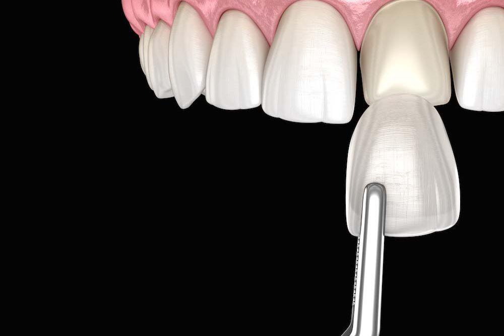

Veneer Gigi


Apa itu Veneer Gigi?
Veneer gigi adalah cara untuk memperbaiki penampilan gigi dengan menempelkan lapisan tipis di depan gigi. Ini membantu menutupi masalah seperti warna, bentuk, atau ukuran gigi yang tidak sesuai.
Perbedaan Veneer Gigi dengan Metode Lain
Veneer hanya menutupi bagian depan gigi, berbeda dengan implan gigi yang mengganti gigi hingga ke akarnya, atau crown gigi yang menutupi seluruh bagian atas gigi.
Berapa Lama Veneer Gigi Bertahan?
Veneer komposit biasanya bertahan 3-5 tahun, sedangkan veneer porselen bisa bertahan 10-15 tahun, bahkan hingga 25 tahun jika dirawat dengan baik.
Manfaat Veneer Gigi
Veneer gigi dapat membantu mengatasi masalah seperti:
- Gigi yang berubah warna.
- Gigi yang patah atau retak.
- Bentuk gigi yang tidak normal.
- Gigi yang sedikit miring.
Risiko Pasang Veneer
Beberapa risiko yang perlu diperhatikan adalah:
- Perubahan warna di sekitar veneer.
- Iritasi pada gusi.
- Gigi bisa menjadi sensitif.
- Veneer bisa retak jika menggigit benda keras.
Cara Merawat Gigi Setelah Memasang Veneer
- Sikat gigi secara teratur.
- Gunakan benang gigi (floss).
- Berkumur dengan obat kumur.
- Hindari makanan keras dan lengket.
- Jangan menggigit benda keras.
- Rutin periksa ke dokter gigi.